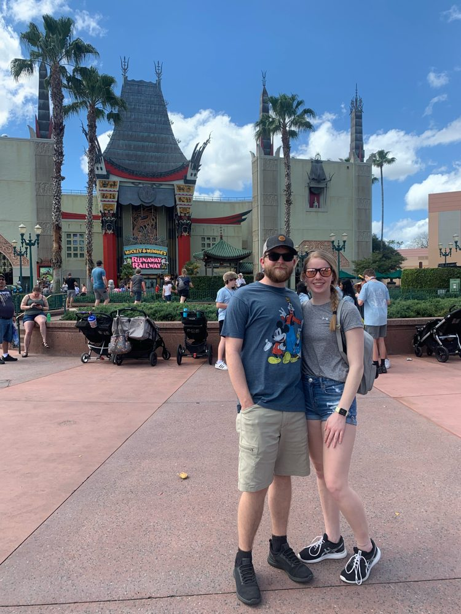
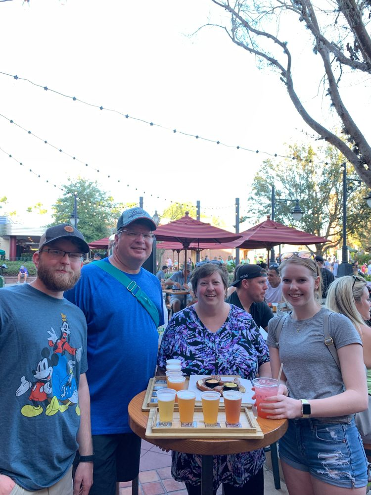
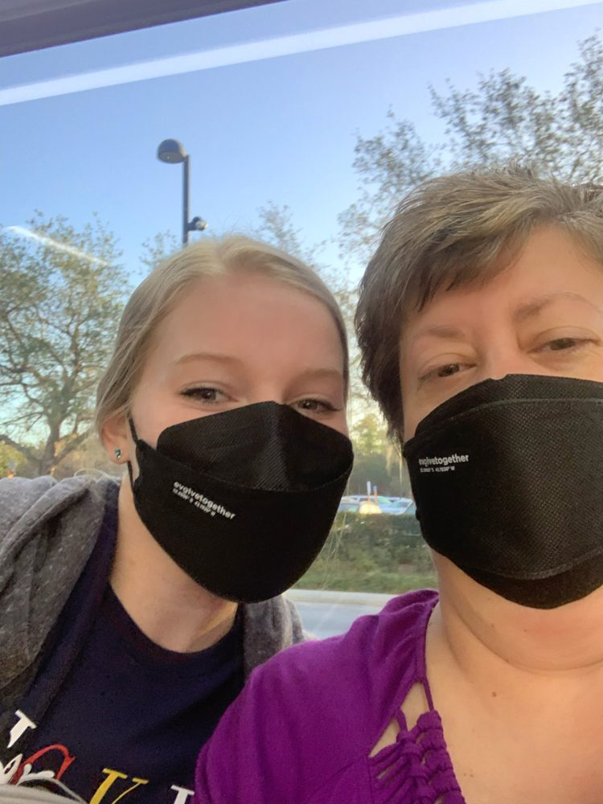
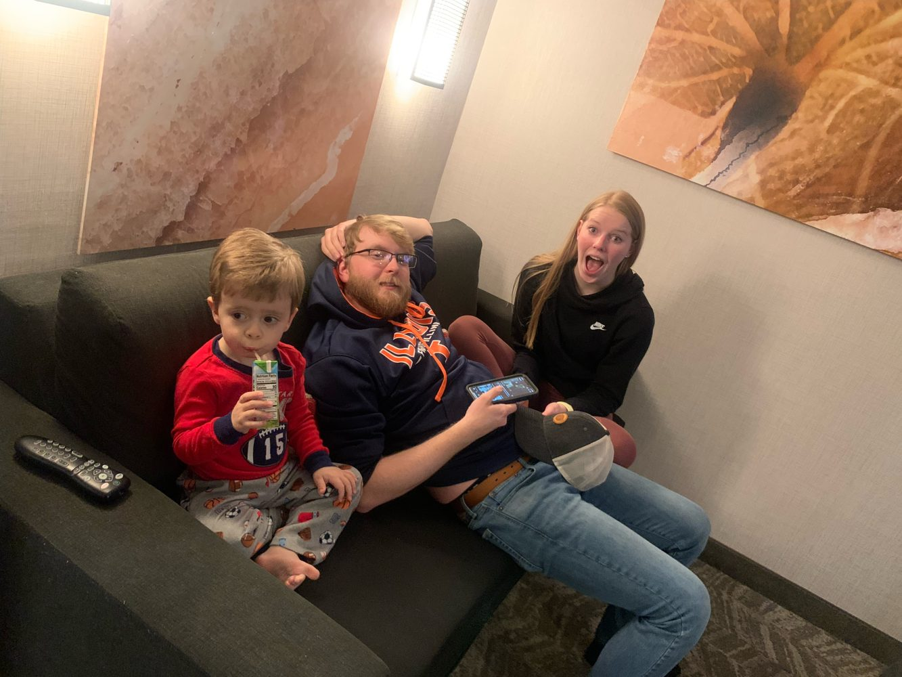
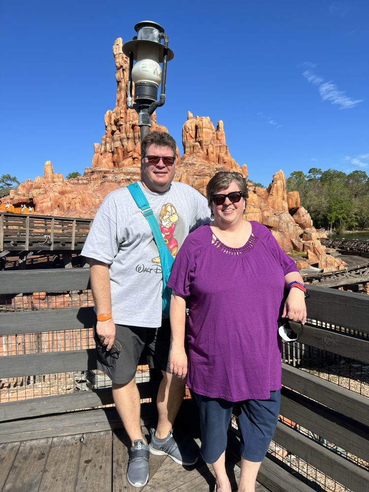

March 2022 - Owen & Kacie's First Disney Trip Together
Source: Disney March 2022 - Kacie.html
March 2022
Alan: 53 (turns 53 on trip!)
Lisa 52
Owen:22
Kacie: 20

Also known as the covid trip. We last went in Oct 2019 five months before covid hit and we haven't gone anywhere since!
We did plan a big trip for November 2021 for all of us plus Olivia, Tim and Kevin but it got cancelled. When we planned it, we were all dumb enough to think covid was ending and things were getting better and so in early summer of 2021 (things were improving with covid) I started planning but we knew it was a big MAYBE/HOPFULLY!
However, once school started things got bad again and I kept putting off cancelling but I had 30 days prior to cancel and so that was around mid Oct. and during the first two weeks in Oct eight people in Shelbyville passed away from covid and I just couldn't handle the stress of it. I was worried about myself of course with all my health issues but also Kevin because he was unvaccinated and then add to that I was worried Olivia would get it and she's pregnant so that would not be good.
Someone had to make the decision and cancel it and after those horrible two weeks I did.
Turns out that after a really bad time period with covid we then have an improvement period. And around mid November and Thanksgiving which is when we would have gone things improved somewhat. But it was too late.

And now with Olivia having another baby I thought when will we ever be able to go again? And I decided to just randomly book this trip thinking that again it will get cancelled! spoiler alert……….it didn't! But when I booked it, I was about 98% sure the trip wouldn't happen!
This trip would be Me, Alan, Owen and Owens girlfriend Kacie! That was very brave of me. I'm not a big fan of traveling with other people that aren't my immediate family but since she was included in the cancelled November trip it seemed like I should include her in this one. But I didn't just include her I planned the whole dang thing around her schedule! HAHA! when looking at when we could go, I literally had no idea because of covid.
Also, we've only gone in November and January on all our other trips. But I knew that last spring covid improved so I thought maybe spring break would work! Well in order for Kacie to go she had to have time off from school so I checked the Lake Land calendar and picked her week off for spring break. It did worry me that it was so early in the spring (I don't consider the 1st week of March spring!!) but Olivia was due to have baby Todd in April so the timing of early March worked ok with that.
Then in January covid got awful again and even Kacie got it which secretly I was a little happy about cause then I don't have to worry about her getting it right before or during the trip. I even thought that maybe I WANT to catch it and get it over!! I got yelled at for thinking that though! I waited out the bad numbers and people on my Disney site were cancelling like crazy and I didn't I just kept thinking after a BAD spell it gets better so I crossed my fingers and waited it out and it worked!
So that is how the dates were picked and since I was so certain the trip would never happen, I didn't bother worrying and stressing over the dates too much and I didn't tell Owen or Kacie for a long time! Eventually, Alan thought I needed to tell Kacie because what if she had other plans at Spring Break time. But I didn't want to become known as the crazy covid lady who books and cancels trips for a hobby!

Instead of telling Kacie I just told Owen and I said pay attention and make sure she has no other plans at that time! And I said I'm not telling her till February 1st and swore him to secrecy and because he also didn't want to be embarrassed if I cancelled yet again, he didn't tell her about it at all!
The plan is for Alan and I to go down on Wed, Thur, Fri by ourselves and the "kids" will fly down and join us Saturday morning till Wednesday and we will all fly home together on Wednesday. Then while discussing flights and times with Owen I said would you prefer the 6am flight on Saturday morning and come home Wed. or the 6pm flight Saturday night and stay till Thursday. It worked out to the same number of days in the parks (4 days) and his response was why don't we take the early flight Saturday and stay till Thursday anyway! Well, I didn't think he'd want to miss that many vacation days from work so early in the year etc but he was fine with it and READY to travel and READY for DISNEY!
So, Dates are March 2nd-10th for Alan and Lisa and March 5th-10th for the kids. Five Park days for the kids and eight for us. I made a ton of dining reservations and we planned to try some new places and of course some regulars. Due to covid and worker shortages there were still a lot of restaurants not reopened yet and some that had opened but weren't back to usual. Example: Crystal Palace has no breakfast at all and their lunch and dinner have no characters. Cape May reopened days before our trip but took away the crab legs! And also, in the last couple of weeks before our trip they started to reopen some of the buffets! UHHH NO THANKS!
Also, when planning this I weighed the pros and cons and went over all the covid rules that Disney was enforcing. Masks required inside everywhere! In restaurants, stores, shows etc. well ONE week before we left, they DROPPED THAT RULE! I was beyond mad! Masks were luckily still required and enforced on transportation but I wanted everyone around me masked in the shows and in the lines for rides that are inside etc. plus I wouldn't have to worry about forcing Owen and Kacie to wear masks if Disney was doing it for me! I was SO MAD! And also, we wouldn't be the only weirdos with masks because everyone would have them on! But not now! ARRGHHH!!! And just ONE WEEK BEFORE OUR TRIP!! I wasn't the only one mad people on the Disney boards were not happy because they too had planned trips based on the enforced rules.

